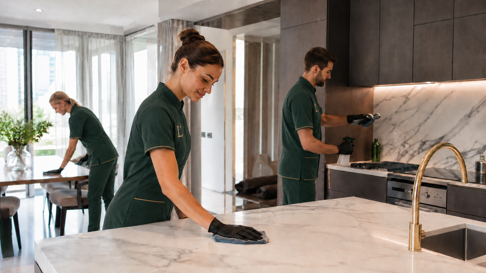
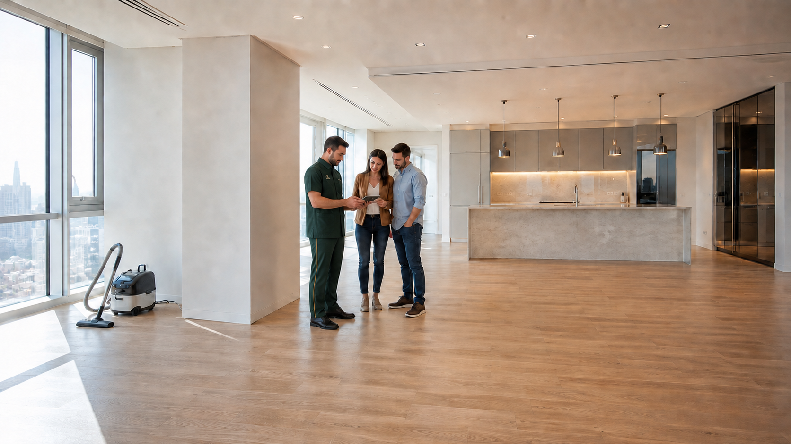
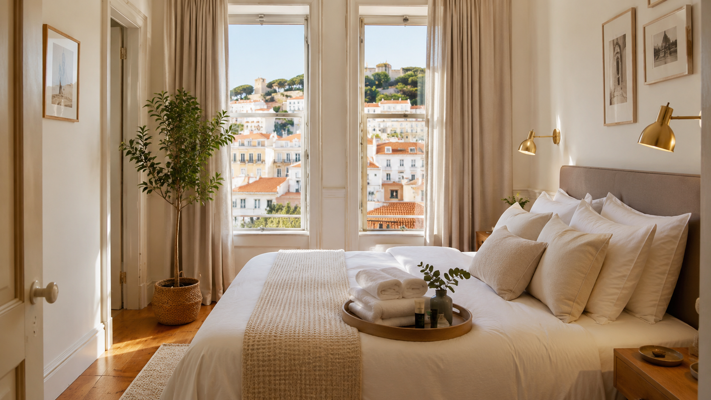

Larevia Home
Limpeza recorrente de apartamentos e moradias habitados, com rotina semanal, quinzenal ou personalizada.
- Checklist da casa
- Equipa de confiança
- Manutenção de padrão
Private property care Porto · Gaia · Matosinhos
Cuidado profissional de imóveis
Limpeza residencial premium, limpeza profunda, pós-obra e preparação de alojamentos locais — com método, equipa de confiança e controlo de qualidade.
Uma solução completa
Começamos pelo cuidado residencial, onde já existe proximidade e confiança, e expandimos para serviços complementares sem perder o mesmo padrão operacional.
Discrição · Método · ContinuidadeServiços
O cliente escolhe o objetivo. A Larevia define o método, a equipa e a execução.
Limpeza recorrente de apartamentos e moradias habitados, com rotina semanal, quinzenal ou personalizada.
Limpeza profunda para mudanças, manutenção sazonal, pré-venda ou imóveis que exigem intervenção detalhada.
Limpeza técnica de imóveis novos ou remodelados, preparando cada espaço para entrega, venda ou entrada.
Preparação de alojamentos locais entre reservas, com limpeza, roupa, consumíveis e controlo do imóvel.

Método Larevia
Transformamos preferências, materiais e prioridades numa rotina clara, que pode ser seguida e supervisionada.
Tipologia, materiais, zonas críticas e preferências.
O que deve ser feito, em que ordem e com que frequência.
Identificação, instruções e produtos adequados.
Confirmação, observações e correção quando aplicável.

Private home careO compromisso Larevia
Uma única relação de confiança para conhecer a casa, antecipar necessidades e manter cada detalhe no lugar.
Presença profissional, comunicação reservada e respeito absoluto pela intimidade do imóvel.
Preferências e cuidados documentados para que o padrão se mantenha em cada visita.
Decisões ajustadas aos materiais, ao ritmo da casa e ao nível de preparação esperado.
Como competimos
Não procuramos ser a opção mais barata. Procuramos ser a opção em que o cliente confia para manter o imóvel pronto.
Equipa identificada, instruções claras e possibilidade de substituição sem perder o padrão.
Produtos e técnicas ajustados a madeira, pedra, inox, vidro, lacados e superfícies delicadas.
Agendamento, confirmação, registo de preferências e observações importantes após o serviço.
Da manutenção residencial ao pós-obra e alojamento local, dentro de uma única relação de confiança.
Para quem é
A Larevia é pensada para pessoas e parceiros que valorizam discrição, continuidade e atenção real aos detalhes.

Como funciona
Recebemos a localização, tipologia, necessidade e frequência pretendida.
Analisamos o imóvel presencialmente ou por vídeo e definimos o serviço adequado.
O cliente recebe uma proposta clara com escopo, frequência e condições.
A equipa segue a ficha e a checklist, com os produtos e cuidados definidos.
Confirmamos a conclusão, registamos observações e mantemos o histórico do imóvel.
Área inicial de atuação
A expansão será feita por zonas e rotas, protegendo a pontualidade, a qualidade e a eficiência da operação.
Perguntas frequentes
A prioridade é criar relações recorrentes, mas também avaliamos limpezas profundas, pós-obra e preparações pontuais.
O cálculo interno considera tempo e recursos, mas a proposta é apresentada por serviço, plano ou imóvel, conforme a necessidade.
Sim. A equipa leva os produtos e equipamentos definidos para o serviço, respeitando materiais e restrições do imóvel.
Sim. A linha Larevia Stay será ativada por zona, com processos específicos para turnover, roupa, consumíveis e verificação.
O protocolo de entrada é definido na avaliação e fica limitado à operação acordada. Chaves, códigos e instruções de acesso não são incluídos em mensagens de serviço ou registos fotográficos.
O cliente comunica a ocorrência, analisamos a ficha e a validação do serviço e definimos a correção prioritária adequada. O objetivo é resolver e atualizar o processo para evitar repetição.
Consulta privada
Partilhe os dados essenciais. A primeira conversa serve para compreender o imóvel e desenhar uma solução adequada.